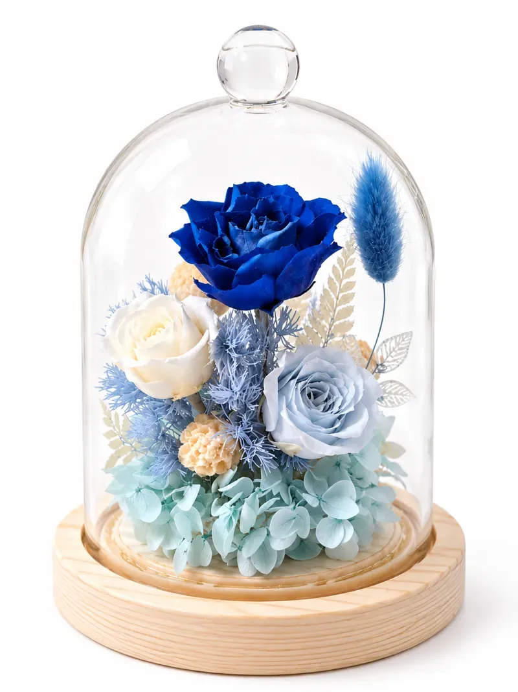

寶藍色專屬花藝
夜知・靛色鐘罩花
安靜地陪伴你，留在桌邊，也留在心裡。鐘罩可以發光，附燈光。
NT$1,280
- 尺寸
- 9 × 12 公分
- 保存期限
- 2～3 年
- 保存方式
- 避免陽光直射；不用澆水，也要避免潮濕。
- 注意事項
- 避免搖晃作品導致損傷。每朵花型態不一樣，作品樣式無法 100% 一樣；若遇到花材缺貨，將替換為其他花材。
適合超商店到店，玻璃罩會加強包裝保護。

寶藍色專屬花藝
安靜地陪伴你，留在桌邊，也留在心裡。鐘罩可以發光，附燈光。
NT$1,280
適合超商店到店，玻璃罩會加強包裝保護。